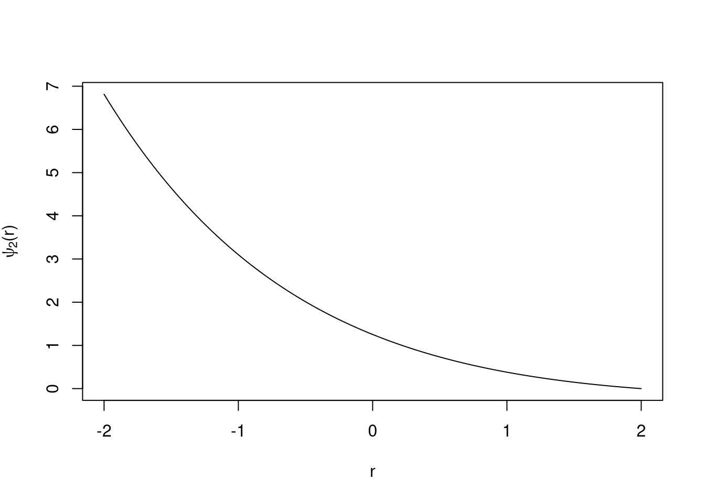

11 Πρόβλημα
Η πρώτη διεγερμένη (σφαιρικά συμμετρική) ιδιοκατάσταση του ατόμου του υδρογόνου περιγράφεται από την κυματοσυνάρτηση \[ψ_2(r) = Ν(1-\frac{r}{2}) e^{-r/2}\] Υπολογίστε εξής:
Τον συντελεστή κανονικοποίησης \(N\)
τη μέση απόσταση του ηλεκτρονίου από τον πυρήνα
την απόσταση (ή τις αποστάσεις) από τον πυρήνα όπου η (ακτινική) πυκνότητα πιθανότητας να βρούμε το ηλεκτρόνιο σε απόσταση \(r\) γίνεται μέγιστη. Κάντε, τέλος, τη γραφική παράσταση τόσο της \(ψ_2(r)\) όσο και της αντίστοιχης ακτινικής πυκνότητας πιθανότητας.
11.1 Λύση
Ξέρουμε ότι \[\begin{gathered} 4\pi \int_{0}^{\infty} \left| \psi(r) \right|^2 r^2\,dr = 1\\ 4\pi \left| N \right|^2 \int_{0}^{\infty} r^2 \left| (1- \frac{r}{2}) \right|^2 e^{-r} = 1\\ \ldots \\ N = \pm \frac{1}{2\sqrt{2p}} \end{gathered}\]
\[\begin{gathered} \left< r \right> = \int_{0}^{\infty} r \left| ψ(r) \right|^2 4πr^2 \,dr \\ \ldots\\ \left< r \right> = 6 \end{gathered}\]
\[\begin{split} P(r) &= \left| \psi(r) \right|^2 4\pi r^2 \\ &= 4π^2 *\left| \frac{1}{2\sqrt{2\pi}} (1-\frac{r}{2}) e^{-r/2} \right|^2\\ &= e^{-r} \left(\frac{r^2}{2} - \frac{r^3}{2} + \frac{r^4}{8}\right) \end{split}\] \[\frac{d P}{d r} = 0 \Rightarrow \frac{1}{8}e^{-r} r\left( r^3-8r^2+16r-8 \right)=0\] \[r=0 \quad r=5,236 \quad r=2 \quad r=0,76\]
curve((1/2*sqrt(2*pi)) * (1- x/2) * exp(1)^(-x/2), -2, 2, ylab = latex2exp::TeX('$\\psi_2(r)$'), xlab="r")
Άρα πιο πιθανό είναι να βρούμε το ηλεκτρόνιο σε απόσταση από τον πυρήνα.
Και τέλος η γραφική παράσταση της \(ψ_2(r)\)